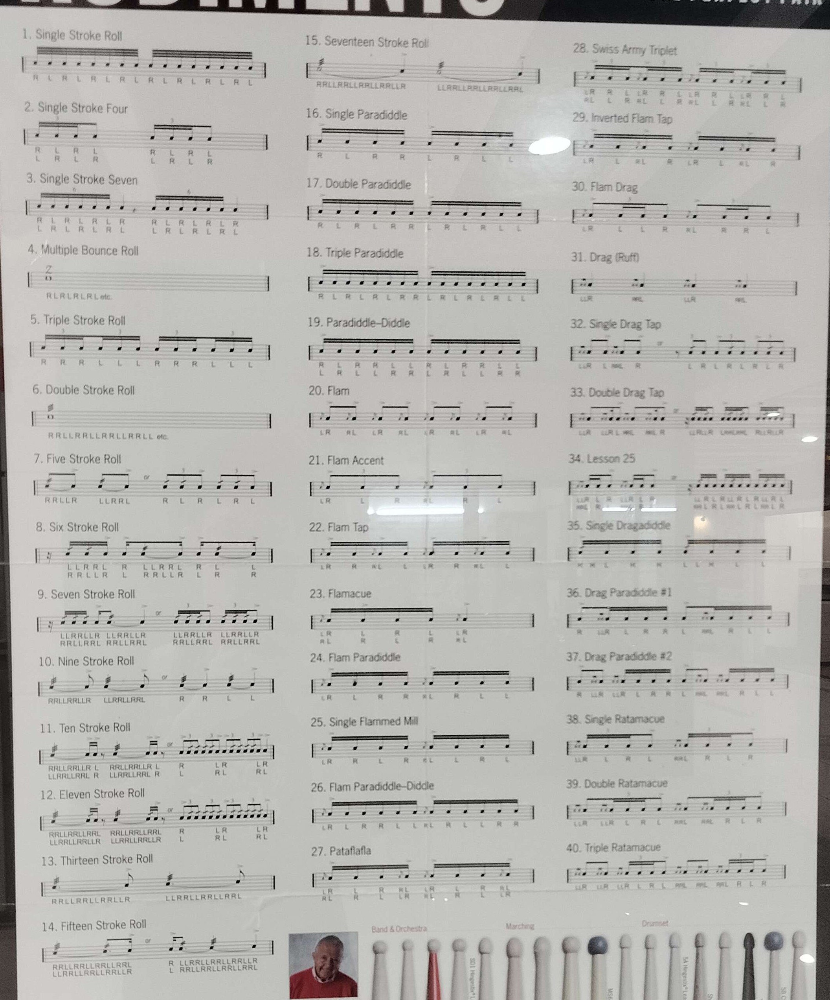
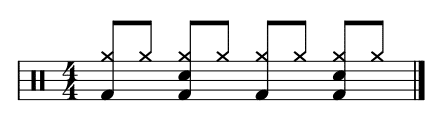
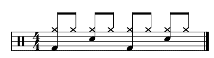
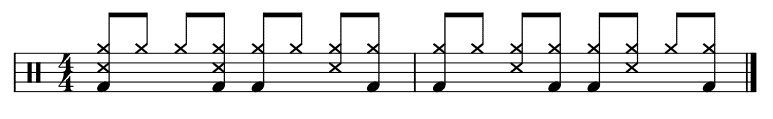
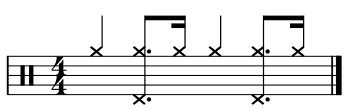

(mainly a 5 piece drum kit)
The snare is one of the main drums of a kit, all drum kits will have one. This is because of its 'crack' or 'pop' sound that it makes, caused by the metal strings attached to it at the bottom. It is played using sticks. There are 3 ways to hit the snare, normal, cross stick or rimshot. The snare serves diffrent purposes depending on the type of beat played. It is used as a backbeat in most beats. The snare and kick usually works together to form most grooves.
(Click on the button below to listen)
The kick drum is one of the main drums of a kit, all drum kits will have one. This is because of its deep and resonating sound it makes, caused by how big the drum is and being tuned to a lower pitch. It is played using a pedal drummers step on. Another pedal can also be attached to allow the drummer to play grooves that require double bass drums. The kick serves diffrent purposes. Most of the time it serves as a foundation of the beat. The kick and snare usually works together to form most grooves.
(Click on the button below to listen)
The Hi-Hat is one of the main cymbals of a kit, all drum kits will have one. This is because of its short and sharp or loose sound that it makes, caused by two cymbals stacked on top of one another. Its is played using sticks and stepping on a pedal to control the sound it makes, stepping on it to make the short and sharp closed Hi-Hat sound or lifting up your feet to make a loose open Hi-Hat sound. The Hi-Hat mainly serves the purpose of providing a steady rhythemic pulse. It usually works with the Snare and Kick to form most grooves.
(Click on the button below to listen)
The crash is one of the main cymbals of a kit, all drum kits will have one. This is because of the crash sound that it makes, caused by its size and thickness. Its is played using sticks, hitting it close to the edge of the cymbal. The crash mainly serves the purpose of an exclamation, highlighting key moments. It can work with the Snare and Kick to make a groove.
(Click on the button below to listen)
The high tom is one of the main drums of a kit, all drum kits will have one. This is because of its 'tah' sound that it makes. Its is played using sticks. Its purpose is often used in in drum fills, creating melodic movement when combined with mid and floor toms.
(Click on the button below to listen)
The mid tom is one of the main drums of a kit, all drum kits will have one. This is because of its 'doom' sound that it makes. Its is played using sticks. Its purpose is often used in in drum fills, creating melodic movement when combined with high and floor toms.
(Click on the button below to listen)
The floor tom is one of the main drums of a kit, all drum kits will have one. This is because of its 'boom' sound that it makes. Its is played using sticks. Its purpose is often used in in drum fills, creating melodic movement when combined with high and mid toms.
(Click on the button below to listen)
The ride is one of the main cymbals of a kit, all drum kits will have one. This is because of its 'ping' or 'ding' sound that it makes, caused by hitting the bow or the bell. Its is played using sticks. The ride mainly serves the purpose of providing a steady rhythemic pulse, more smooth and open compared to the hi-hat. It usually works with the Snare and Kick to form most grooves.
(Click on the button below to listen)
Rudiments are the basic building blocks of drumming, essentially the vocabulary of drum technique. Its shown with which hand is used on which hit, shown my R and L meaning right and left respectively.
Grooves are the main beat of the song that repeats in a song
A steady, even groove. Every beat is hit the same way.
Songs that use this:
A strong, driving groove. Makes the music feel like its moving forward
Songs that use this:
A soft, gentle Brazilian rhythm that feels like a slow, relaxed sway.
Songs that use this:
A bouncy and smooth groove that feels like dancing or gliding instead of walking straight.
Songs that use this: